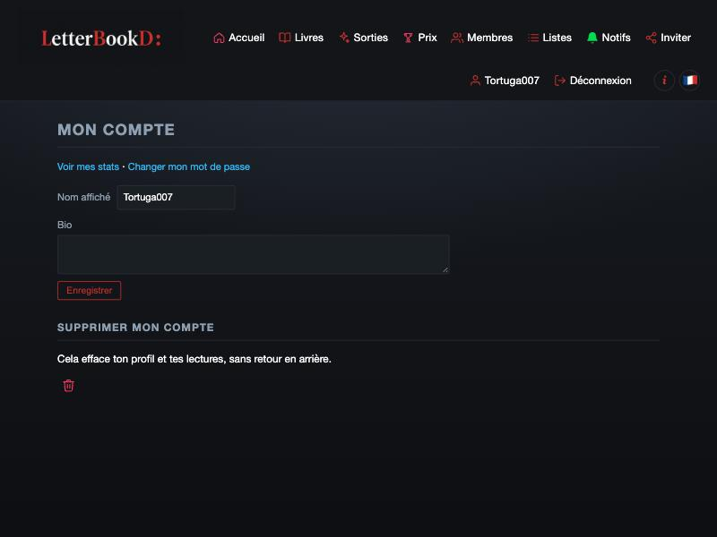

Mon compte
À quoi ça sert : Personnaliser ton identité dans le club (pseudo, bio) et gérer la sécurité (mot de passe). Également : lire tes stats de lecture et supprimer définitivement ton compte si tu souhaites quitter.

Parcours
En haut, deux liens rapides : 'Voir mes stats' (page de stats personnelles) et 'Changer mon mot de passe'. Dessous, formulaire de profil : 'Nom affiché' (ton pseudo public) et 'Bio' (texte libre, visible sur ton profil par les membres de tes clubs). Clique 'Enregistrer' pour appliquer. Plus bas, section 'Supprimer mon compte' : une icône corbeille qui ouvre une confirmation. La suppression est définitive : profil, lectures, avis, listes, tout est effacé.
Chaînes d'action
Chaque ligne décrit un déclencheur dans l'interface, ce qu'il ouvre (modal ou formulaire), et l'effet produit.
| Déclencheur | Modal / Champs | Effet |
|---|---|---|
| Lien 'Voir mes stats' | — | Ouvre ta page de stats : nombre de livres lus, moyenne de notes, auteurs favoris, évolution dans le temps. |
| Lien 'Changer mon mot de passe' | Formulaire allauth : ancien mot de passe + nouveau (deux fois). | Remplace ton mot de passe. Les autres sessions ouvertes restent valides. |
| Bouton 'Enregistrer' (formulaire de profil) | Nom affiché (pseudo, obligatoire), Bio (texte libre, optionnelle). | Met à jour ton profil. Les changements apparaissent partout où ton pseudo est affiché. |
| Icône corbeille sous 'Supprimer mon compte' | Formulaire de confirmation (page séparée). | Supprime définitivement ton compte, tes lectures, tes avis, tes listes et tes invitations. Action irréversible. |